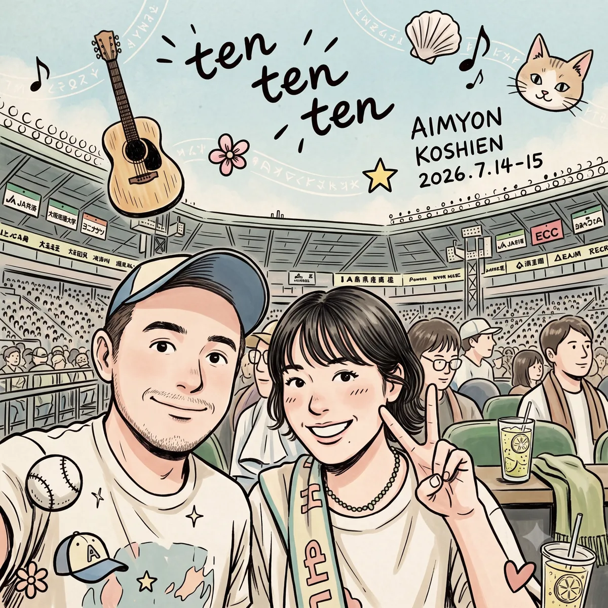
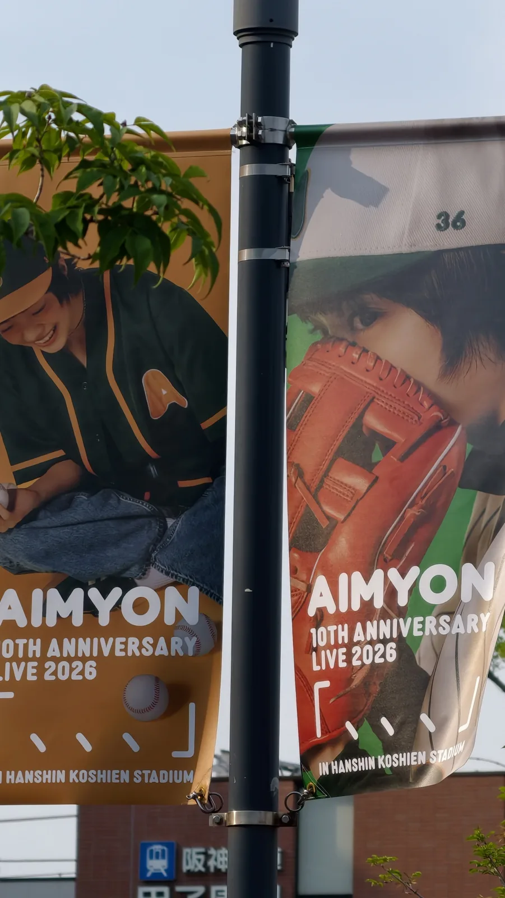
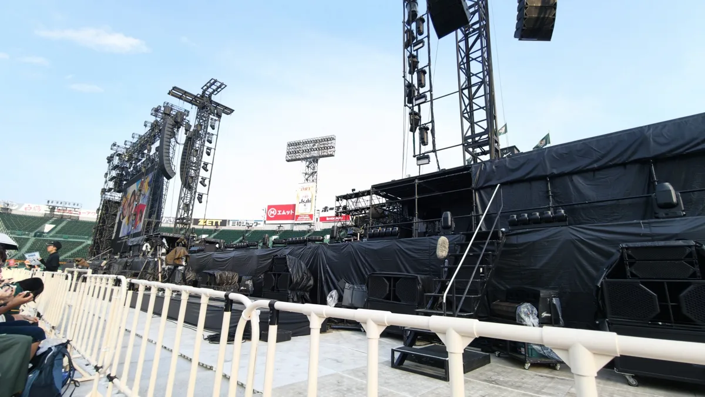

AIMYON 10th Anniversary LIVE「、、、」in 阪神甲子園球場
2026.07.14 - 15
Spotify 自選播放清單 / 自分でまとめたプレイリスト
【日本語】45歳の夏に残った、少し特別な一夜
2026年7月14日、甲子園の夜風とアリーナの熱気が混じり合った夜。
45歳になった今、旅先で起きた偶然に、若い頃のように大きな意味をつけようとはあまり思わなくなりました。それでも、時間が経ってから「あれはなかなかない経験だった」と思い返す夜があります。私にとって、この日の甲子園がそうでした。
隣の席の方が持っていた「祇園の団扇（うちわ）」は目に留まりましたが、それをきっかけに話をしたわけではありません。ライブ中は、うなずいたり、目を合わせたり、微笑んだりしながら、自然にやりとりしていました。あいみょんをもっと近くで見られるように、隣のそよさんに私が場所を譲った場面もありました。言葉を交わして少し話をし、一緒に写真を撮ったのは終演後のことです。台湾から一人で来ていた私にとって、言葉や国籍を意識しすぎず、同じライブを自然に楽しめたこと自体が新鮮でした。
一緒に撮った写真を見ると、あの夜の空気や甲子園の景色まで一緒に思い出します。（後ろのおじさんの表情まで含めて、いい一枚でした。笑）
誰かとの出会いを必要以上に特別扱いしたいわけではありません。ただ、45歳で初めて日本のライブに参加し、想定外の旅程の末に最前列に座り、隣り合わせた人と自然に同じ時間を楽しめた。それは私の人生では、少し珍しく、十分に記憶に残る経験でした。このページは、そんな二日間を忘れないための記録です。

甲子園10周年の記憶｜📝 余白に残る夜風も、この夏の記憶の一部。
この二日間と一緒に残したプレイリスト（MY SPOTIFY PLAYLIST）
このページと一緒に聴くために、自分でまとめた Spotify プレイリスト。公式セットリストの再現ではなく、甲子園の二日間を振り返るときに流したい、自分なりの選曲です。
【ライブレポート】フライト欠航から始まった二日間：アリーナ最前列で見た甲子園
01 | 遅れた出発、予定外から始まった旅
余裕を持っていたはずのひとり旅が、人生初の「台湾発フライト欠航」で大きく崩れました。出発は2日遅れ、予定はかなり圧縮。それでも日本に着いてからは一つずつ予定を組み直し、結果として甲子園には無事に間に合いました。振り返れば、予定通りではなかったからこそ印象に残った旅でもあります。
夕暮れ時の美しいブルーアワー（Blue Hour）に包まれ始めた甲子園の街並みは、まるでフィルム写真の1コマのように静かに私を迎え入れてくれました。
12:51 | 旅の始まりと街の風景
02 | アリーナ最前列の視界と、印象に残ったハイタッチ
阪神甲子園球場に入り、階段を降りてアリーナ席に近づくにつれて、少しずつ実感が湧いてきました。初日の私の席はアリーナ最前列、ステージに向かって少し右手側の位置です。想像していたよりずっと近く、昔の小さなライブハウスほどの距離ではないものの、4万人規模の球場で視界を遮られず最前列に座れたことは、それだけで十分に珍しい経験でした。時にはステージの照明が直接目に入り、まぶしくてスクリーンに目を向けることもありましたが、まさにこの場所だったからこそ、その夜の不思議な瞬間につながりました。
初日のライブ中、あいみょんがホームベース側のサブステージで歌いながらメインステージへ戻ろうとしていたときのことです。道すがらファンとハイタッチ✋で触れ合う場面もある中、最初は閉鎖されていた私のすぐ横のエリアを、スタッフの方々が次々と開け始め、運営ブース側からステージへと戻る専用通路が目の前に現れました。そのとき、私は自分の場所を空けて日本のそよさんに譲り、自身は柵が直角に曲がる角のところに立ちました。すると幸運なことに、歌いながらメインステージへ駆け上がる直前、最後にハイタッチを交わしたのが私だったのです。ほんの一瞬でしたが、この二日間を振り返るときに、はっきりと思い出す場面の一つです。
16:06 | 入場前の空気と記念写真

16:39 | 10周年ライブの開演を待つ時間
03 | 4万人の熱気と、旅先での少し珍しい出会い
これは私にとって人生初の日本でのライブ参戦。満員の日本のファンと一緒にライブを楽しむ感覚は意外なほど心地よく、それぞれが自分のスタイルで音楽に没頭していました。
この席では、もう一つ印象に残る出来事がありました。隣の席のファン・そよさんとの交流です。祇園の団扇は目に留まりましたが、それについて話をしたわけではありません。ライブ中は、うなずきや視線、微笑みを通してやりとりし、あの専用通路ができた場面では、あいみょんをもっと近くで見られるように私が場所を譲ることもありました。少し言葉を交わし、一緒に写真を撮ったのは終演後です。45歳になると、旅先の偶然を何でも「縁」や「奇跡」と呼ぶ気にはなりません。それでも、外国で初対面の人と気負わず同じ音楽を楽しめたことは、そう何度もある経験ではありません。今回の二日間を思い出すとき、この場面もきっと一緒に残ると思います。
21:10 | 終演後の甲子園の夜
🌌 甲子園の夜空に響いた、みんなの余韻
「甲子園の夜風の中で聴いたあいみょんの歌声は、今でも印象に残っています。」
「4万人で同じ空を見上げたあの時間。隣の席の人と笑顔で目配せした瞬間、音楽の良さを実感した。」
📝 初日終演後の備忘録（難波での打ち上げと深夜のドンキ）：
初日のライブが終わったあと、急いで難波へ戻り、台湾のファン仲間のグループが開いた「鳥貴族」での小さな打ち上げに参加しました。そのまま夜12時過ぎまで食べて語り合い（当日、手作りのオリジナルグッズを配ってくれたお二人に感謝！）、お開きのあとはさらにドン・キホーテを90分も見て回り、結局ベッドに入ったのは深夜3時過ぎでした……！
04 | 体力の限界に挑んだ2日目、悔いのない10周年
2日目は、前夜の深夜3時過ぎ就寝という過密スケジュールの疲れに加え、日本のライブは「全員がずっと立ちっぱなし」だと実感し、日中の観光も含めてかなり体力を使いました。セトリに入っていなくて少し残念だった曲もあります。それでも、10周年という節目を甲子園で二日間見届けられたこと、初日からいくつも予想外の出来事が重なったことを考えると、十分に満足できる遠征でした。
21:35 | 甲子園の夜と最後の一枚
📝 メモ：2日目はかなり体力を使った。聴けなかった曲はあったけれど、10周年の甲子園を二日間見届けられたことで十分だった。
【繁體中文】45歲的夏天，一段少有而難忘的經驗
2026年7月14日，甲子園的夜風與搖滾區熱氣交織的那個夜晚。
45歲的現在，我已不像年輕時那樣，總想替旅途中每個巧合賦予特別意義。不過有些經驗，過一段時間回頭看，仍會覺得「這真的不常遇到」。這晚的甲子園就是其中之一。
我有注意到旁邊歌迷手上的「祇園扇子」，但沒有因此聊起來。演唱會過程中，我們透過點頭、眼神與微笑自然互動；我也曾讓出位置，讓身旁的日本歌迷 そよ 能更近距離看 Aimyon。會後，才有了短暫聊天與合照。對一個從台灣獨自來看演唱會的人來說，能不太在意語言和國籍，只是自然地一起享受現場，其實已經很難得。
每次看到那張合照，就會連同當晚的空氣與甲子園的景色一起想起來。（連後方阿伯的表情都成了照片的一部分，笑。）
我不想把一次相遇說得過度浪漫，也不需要替它安排未來。只是45歲第一次在日本看演唱會，經過班機取消與行程壓縮，最後坐進甲子園首排，還和陌生人自然共享了一段很好的時間。對我而言，這已是一段少有、值得記住的經驗。這個頁面，就當作替那兩天留下一份紀錄。
甲子園十週年的美好記憶｜📝 留白處的夜風，也是這個夏天記憶的一部分。
和這兩天一起留下的播放清單（MY SPOTIFY PLAYLIST）
這是我自己整理、適合和這篇紀錄一起播放的 Spotify 歌單。不是官方歌單，也不是現場 setlist 的重製，只是回頭想起甲子園這兩天時，我會想再播放的一份選曲。
【參戰日誌】從班機取消開始的兩天：在搖滾區首排看到的甲子園
01 | 延後的啟程，從意外開始的旅程
原本規劃從容的獨旅，卻因為人生第一次遇到「台灣出發班機取消」而大幅被打亂。延後兩天出發，行程也被壓縮許多。不過抵達日本後，只能一件一件重新安排，最後還是順利趕上甲子園。回頭看，正因為沒有照原定計畫走，反而讓這趟旅程更有記憶點。
當夕陽餘暉漸染上美麗的藍調時刻 (Blue Hour)，甲子園的街景就像底片相機捕捉下的那一格畫面，安靜地迎接我的到來。
15:43 | 抵達甲子園周邊氛圍
02 | 搖滾區首排視野，與意外留下的擊掌瞬間
步入阪神甲子園球場，沿著階梯走近搖滾區座位時，才慢慢有了實感：距離比原先想像得近很多。我參加首場時的位置在特區第一排、面對舞台偏右手邊一點的地方。雖然不像小型 Livehouse 那樣近在咫尺，但在四萬人規模的球場中，能坐在視野幾乎沒有遮蔽的首排，本身就是一次很少有的經驗。過程中雖然有時會被舞台燈光直接打到眼睛、得轉頭看大螢幕，但這個位置卻也促成了當晚奇妙的一刻。
第一天演出中，當 Aimyon 在本壘側的第二舞台邊唱邊準備唱回主舞台時，沿途不時會與歌迷擊掌✋互動。當時我身旁原本是一處閉鎖的區塊，沒想到工作人員突然出現，把閉鎖區紛紛打開，瞬間形成一條從服務台側得以直接走回台上的專用道！當下我把位置騰出來給日本的 そよ，自己則站在欄杆轉角的直角處；而就這樣幸運地，在她唱著唱著準備跑上主舞台前，我成了那位最後擊到掌的人～！這個短暫而清楚的瞬間，也成了這兩天裡很有記憶點的一個片段。
16:39 | 球場週遭與紀念佈置

17:11 | 搖滾首排的絕佳視野
03 | 四萬人的熱氣，旅途中少有的一次相遇
這是我人生中第一次在日本參加演唱會。與全場滿座的日本歌迷一同沉浸在音樂中的感覺格外舒適自在，每個人都以自己的方式投入其中。
這個座位也留下另一件讓我記得的事：和旁邊的日本歌迷 そよ 的一段互動。我有看見手上的「祇園扇子」，但沒有因此聊起來。演唱會過程中的交流，是點頭、眼神與微笑；當身旁的回台專用道打開時，我也曾騰出位置，讓 そよ 能更近距離看 Aimyon。會後，我們才短暫聊了幾句，並一起拍照。到了45歲，我不太會把旅途中的每個巧合都說成「緣分」或「奇蹟」。但在異國和第一次見面的人，不用特別用力交際，就能自然地一起享受同一場音樂，確實不是常常會遇到的經驗。以後想起這趟甲子園，大概也會連這個片段一起記得。
21:11 | 散場後的夜景與餘韻
🌌 響徹甲子園夜空的全場迴響
「在甲子園夜風裡聽著 Aimyon 的歌聲，直到現在仍很有印象。」
「4萬人一同仰望同一片夜空的時光。與身旁歌迷相視一笑的瞬間，深感音樂的力量。」
📝 首日散場後的深夜備註（難波鳥貴族小聚＆唐吉軻德）：
第一天演唱會結束後，立刻趕回難波，參加了台灣歌迷群組在「鳥貴族」的小聚，就這樣一路吃到半夜 12 點多（感謝當天分送歌迷自製小禮的兩位朋友！）；飯局結束後，我又去逛了 90 分鐘的唐吉軻德，最後真正躺上床的時間已經是凌晨 3 點多了啊！
04 | 挑戰體力極限的第二天，毫無遺憾的十週年
第二天，帶著前一晚凌晨 3 點多才睡的緊湊行程疲勞，加上真正體會到日本演唱會「全場幾乎一路站著看」，再配合白天的觀光，確實很耗體力。歌單裡也有一些沒聽到的遺珠歌曲。不過能在甲子園連續兩天見證10週年的節點，加上第一天接連發生幾件完全沒預期到的事，這趟遠征已經足夠讓人滿意。
📝 註記：第二天確實很耗體力。雖然有些歌曲沒聽到，但能完整經歷甲子園十週年的兩天，已經足夠。